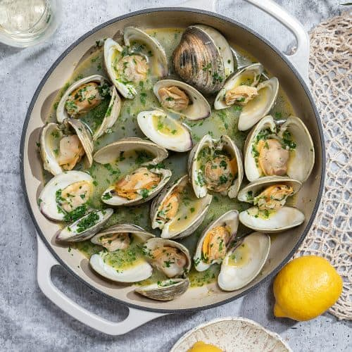

Clams in White Wine

Description
A simple recipe for delicous clams cooked in white wine.
Super easy recipe for a dish to impress your guests!
Ingredients
- 2 lbs clams (manila or littleneck)
- 1 cup dry white wine (sauvignon blanc or pinot grigio are good)
- 1 tbsp olive oil
- 2 tbsp butter
- 1/2 shallot, finely minced
- 4 cloves garlic, finely minced
- Handful of parsley, roughly chopped
- 1/2 lemon
- salt (to taste)
Steps
- Purge the clams by soaking them in salt water for at least an hour.
- Heat the olive oil in a pan over medium-heat.
- Saute the garlic and shallot for about 1-2 minutes. Add salt.
- Add the white wine and bring to a boil. Add the clams and the butter. Cover and steam until the clams open (about 5-10 minutes).
- Remove from heat. Squeeze the lemon and add the parsley.
- Discard any clams that did not open up.
- Enjoy!